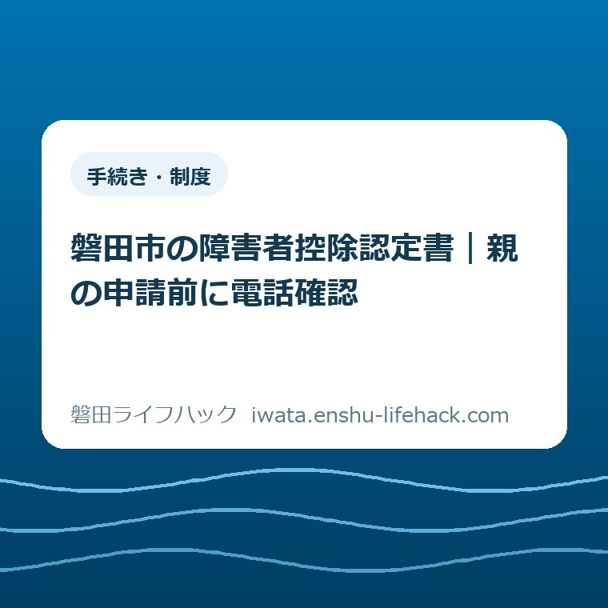
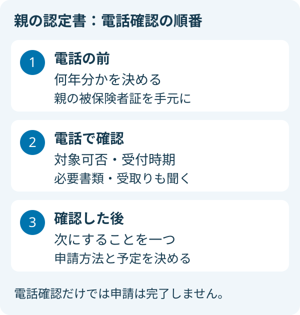
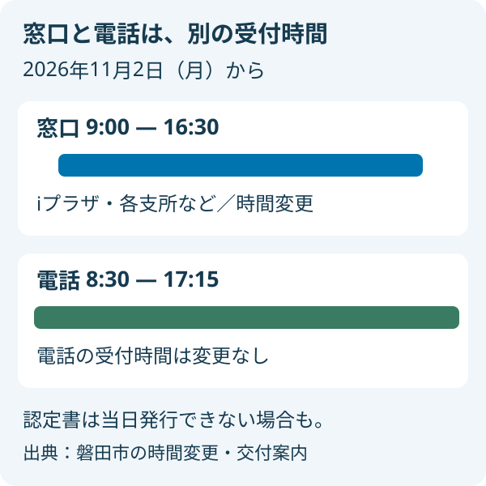

手続き・制度
磐田市の障害者控除認定書｜親の申請前に電話確認

この記事の要点
Q. 親の認定書を申請する前に、何を電話で聞けばよい？
A. 対象は個別条件で変わります。65歳以上の要支援・要介護認定だけでは決まりません。磐田市は発行対象か事前に電話確認できると案内しています。対象年・受付時期・必要書類を確認してから、申請方法と来庁予定を決めます。
介護の予定に、もう一度の来庁を足さないために
磐田市の障害者控除対象者認定書は、親の年齢や認定資料の内容によって交付の対象が変わります。要介護認定を受けているだけで、誰でも発行される書類ではありません。最初に確かめたいのは「どの窓口へ行くか」より、「親の状況で、どの年の認定書について相談するか」です。
通院の付き添い、買い物、勤務の交代。親の暮らしを支えるご家族は、すでに予定を組み替える手間を払っています。書類を一枚もらうためでも、移動時間だけでは済みません。親の予定を聞き、自分の休みを調整し、家にある書類を探す時間もかかります。
私は大石浩之（磐田市／不動産業）です。宅地建物取引士として家の相談に関わる立場から、この記事では税額の計算より、家族が動く順番を整理します。個々の控除の適用は断定しません。まず発行対象かを市に確認し、申請のために必要な行動を絞る話です。
磐田市の交付案内には、事前に認定書発行対象者か否かを電話で確認できると書かれています。この入口を使えば、相談のためだけに来庁する前に確かめられることがあります。今日の一歩は、高齢者支援課へ電話し、親の認定書について確認すること。それ以上を一度に片付ける必要はありません。

認定の条件は「要介護度だけ」では決まらない
磐田市の「要介護認定を受けている方等の障害者控除認定・おむつ医療費控除」の案内では、障害者手帳がなくても認定書の対象となる場合があります。65歳以上で、障がいの程度が一定の状態にあると市町村長の認定を受けた方が対象です。手帳の有無だけで、確認することを諦めなくてよい制度です。
市が示す条件は二つあります。一つは、認定基準日に65歳以上で要支援・要介護認定を受けていること。もう一つは、介護保険主治医意見書・認定調査票における日常生活自立度の判定が、市の認定基準に当てはまることです。二つの条件をともに満たす必要があります。
認定基準日は、所得税申告の対象となる年の12月31日です。対象の方が年の途中で亡くなった場合は、死亡日が基準になります。「いまの親の状況」と「申告する年の基準日の状況」は、同じとは限りません。電話では、何年分について聞きたいのかを先に伝えると、話の対象が定まります。
市は、自立度の基準に当てはまるかを問い合わせ時または申請時に担当課で確認するとしています。ご家族が日常の様子から独自に判定する必要はありません。「家ではこうしているから必ず対象」と決めず、市の持つ認定資料による確認を受ける順番にします。
要介護認定そのものの相談先を探している段階なら、介護認定・地域包括支援センターの案内が入口です。介護のサービスを利用するための認定と、今回の控除に関する認定書は、目的が違います。親がすでに持っている書類の名前を確認してから問い合わせると、相談が混ざりにくくなります。
電話で聞くことを、一枚のメモにする
認定書の事前確認先は、磐田市高齢者支援課の介護保険グループです。公式ページに掲載された電話番号は0538-37-4769です。最初は「親の障害者控除対象者認定書について、申請前に確認したい」と伝えます。相談の目的を先に言えば、別の介護手続きとの区別がつきます。
続いて、確認したい対象年を伝えます。例えば2026年分について知りたいのか、別の年について聞きたいのかを分けます。市の案内にある認定基準日を踏まえると、年の指定を省いて「今年申請できますか」とだけ聞くより、確認したい内容を伝えやすくなります。
2026年10月19日に確認した交付案内には、2026年分の受付開始日は書かれていません。したがって、この記事から「今日、2026年分を申請できる」とは案内できません。「2026年分はいつから申請できますか」と聞き、受付時期と対象可否を別々にメモしてください。
電話の横に置くメモは、対象年、発行対象の確認結果、申請に用意するもの、次に動く時期の四欄で足ります。これは市の指定様式ではなく、私が勧める家族用の記録です。聞き取れなかった点は空欄のままで構いません。曖昧な記憶で「申請できるらしい」と家族へ伝えるより、未確認の箇所が分かるほうが次の相談につながります。
電話で個別の確認を受ける際に必要な情報は、担当課の案内に従ってください。本人確認の扱いや、家族へ伝えられる内容をこちらで決めつけないことも必要です。電話確認ができるという案内は、電話一本で申請や認定書の発行まで完了するという意味ではありません。
書類探しは、申請する人と親の分を分ける
市の交付案内に載る持ち物は、申請者の本人確認書類と、控除の対象となる方の被保険者証です。親の認定書を家族が申請するなら、申請者側の本人確認と、対象となる親の書類を分けて考えます。「親の書類を全部持って行けばよい」と一袋に詰める前に、この二つの役割を見ます。
本人確認書類について、市はマイナンバーカードや運転免許証など、公的機関が発行した顔写真付きのものは1点と案内しています。それ以外は2点必要とし、資格確認書や病院の診察券などを例示しています。実際に用意する組合せが分からなければ、持っている書類名を伝えて確認してください。
被保険者証は、親の介護に関する書類を保管している場所から探すことになります。この記事では、電話前に手元へ置く準備を勧めます。書類が見つからない場合は、その状態を伝えて必要な対応を聞きます。見つからないから相談そのものができない、と自分で結論を出さないようにします。
書類を探す役と電話する役が別なら、紙の名前が読める状態で引き継ぐと相談内容を共有しやすくなります。家族の連絡に個人番号や証書の画像を無造作に広げる必要はありません。市から何を求められたか、誰が保管しているかをまず記録し、提出が必要な情報は案内された方法で扱います。
11月2日から、窓口と電話の時間が分かれる
磐田市の「市役所窓口の受付時間変更」は、2026年11月2日月曜日から、窓口受付を午前9時～午後4時30分に変更すると案内しています。対象施設には各支所とiプラザが含まれます。高齢者支援課は、国府台57-7のiプラザ3階にあります。
一方、電話の受付時間は午前8時30分～午後5時15分のままで、変更ありません。窓口の開始が遅くなり終了が早くなるからといって、電話も同じ時間へ変わるわけではありません。朝の出勤前や夕方に電話できるかは、ご自身の勤務予定とこの時間を照らして考えます。
11月2日以降、窓口で申請する予定を立てるときは、朝8時30分の来庁や午後4時30分を過ぎてからの到着を前提にしないことです。市は午後4時30分までに受け付けた手続きや相談には、受付時間後も対応するとしています。ただし、それは当日中の認定書発行を約束する案内ではありません。
市の時間変更案内には、木曜日の延長窓口と第2日曜日の休日開庁も書かれていますが、対象は市民課・市民税課です。高齢者支援課のこの認定書も同じ時間に受け付ける、と読み替えてはいけません。仕事の都合で通常の窓口時間に動けない場合は、まず担当課へ相談します。
支所を使う選択肢は、磐田市の4支所窓口でできることでも整理しています。距離の近さだけで決めず、今回の書類をどこで受け付け、どこで発行するかを確認します。11月2日の変更は、普段の来庁時間をそのまま使わないための見直しの機会です。

申請する場所と、認定書を受け取る時期を分ける
磐田市が示す申請方法は、電子申請、または高齢者支援課・各支所市民生活課での申請です。本人のほか、家族などからの申請も案内されています。対象と受付時期が確認できたら、家族が無理なく使える方法を選びます。オンライン操作に慣れていない方まで、電子申請にそろえる必要はありません。
認定書の発行を行うのは高齢者支援課だけです。電子申請と支所で受け付けた分は、後日郵送と明記されています。支所で申請できることと、その支所で認定書をすぐ受け取れることは別です。この違いを先に共有すれば、受取りのための予定を誤って組まずに済みます。
市は、当日発行できないことがあるとも注意しています。iプラザへ直接行けば必ずその場でもらえる、と考えて予定を詰めないことです。提出先に期限がある場合は、何年分をいつまでに必要としているかを担当課へ伝えます。この記事では、交付までの日数を独自に見積もりません。
電子申請を選ぶ場合も、入口は市公式の交付案内に掲載されたリンクです。入力項目や添付の扱いは、実際の申請画面と担当課の説明で確かめます。紙の窓口申請で示された持ち物を、そのまま電子申請の添付条件だと読み替えることは避けます。
良い点——出かける前に相談の入口がある
私がこの案内の良い点だと考えるのは、発行対象かどうかを事前に電話で確かめられると明示していることです。家族が判断材料を全部そろえてから窓口へ向かう設計ではなく、途中で相談する入口があります。書類の名前が分かった段階で、次に何を準備するかを聞けます。
家族などからの申請が案内されていることも、生活の段取りに合っています。親が自分で全ての書類を探し、窓口で説明することを前提にしなくてよいからです。誰が動くかを家族で決める際に、本人だけへ負担を集中させない選択肢があります。
電子申請と支所の受付がある点も、iプラザまでの移動を毎回の前提にせずに済みます。ただし、使える方法が複数あることと、どの方法も即日で終わることは違います。後日郵送になる経路まで公式が書いているので、申請後の予定も含めて選べます。
注文したい点——対象年と受付時期を一緒に見たい
私が案内に注文したいのは、対象年ごとの受付開始日を、申請方法の近くで確認できる形です。2026年10月19日に読んだページには、2026年分の開始日が見当たりません。基準日が12月31日と書かれていても、家族には「では、いつ動けばよいのか」が別の疑問として残ります。
受付時期について同じ疑問が生まれるなら、ページに一行あるだけで、電話で聞く項目を一つ減らせます。これは制度の良しあしより、案内の置き方への私の要望です。現時点では、日程を推測で埋めず、対象年を指定して担当課へ確認するのが確実です。
11月2日の時間変更も、申請を案内する個別ページと合わせて読む必要があります。交付案内の連絡先欄だけを見る人が、窓口と電話を同じ時間だと思わない表示があると助かります。家族が複数ページを照合する手間を、少しでも減らしてほしいと私は考えます。
対案・結論——今日の電話で、次の一手を一つ決める
今日取りかかるのは、親の対象年を決めて、高齢者支援課へ事前確認の電話をすることです。発行対象か、希望する年の受付はいつか、何を用意するかを聞きます。回答を受けて、次は書類を探すのか、受付開始を待つのか、申請方法を選ぶのかを一つ決めます。
電話の結果は、確認した日と一緒に家族のメモへ残します。「誰が・何を・いつするか」が一行で読めれば十分です。親の状態について聞かれたこと、手元では答えられなかったことも分けて書くと、別の家族が引き継ぐ際に最初から聞き直す範囲を絞れます。
電話に時間を取れない日は、親の介護保険被保険者証の場所と、対象年だけをメモしておけば準備になります。休暇の申請や交通手段の手配は、必要な手続きが分かってからでよいと私は考えます。電話ができなかったことを、家族の準備不足として責める必要はありません。
住まいの介護用品についても検討している方は、固定用スロープを借りる・買う場合の整理を別の相談として読めます。介護に関わる話でも、福祉用具の利用と今回の認定書では確認する条件が違います。一度の電話で全ての結論を出そうとせず、今回の用件を先に終えます。
大石の視点——休みを取る前の確認に価値がある
私は、家族の半日の予定を組む前に、電話で一つ確かめることには価値があると考えます。これは実際の相談事例を再現した話ではなく、私自身の段取りに対する意見です。制度を詳しく暗記することより、次の行動を間違えないだけの材料を集めることを優先したいのです。
ただ、電話で事情を説明するのが苦手な方にまで、電話が最も楽だと言い切ることには迷いがあります。書類を見せながら相談したい方もいるでしょう。ここで勧める事前確認は、窓口へ行く選択を否定するものではありません。家族が選べる手段を一つ増やす話です。
私が言い切れるのは、要介護という言葉だけで対象だと決めず、担当課の確認を受けてから動くという順番です。制度の説明を、家族の次の一歩へ変える。そのために今日の到達点は「全部申請する」ではなく、「次に何をするかが一つ分かる」に置きます。
よくある質問
障害者手帳がない親でも、認定書の対象になりますか？
対象となる場合があります。磐田市は、基準日に65歳以上で要支援・要介護認定を受け、自立度の判定が一定基準を満たす方へ交付すると案内しています。手帳がないことだけで対象外とは決まりません。ただし要介護認定だけで対象になるわけでもありません。親の認定資料で該当するか、高齢者支援課へ確認してください。
親の代わりに家族が申請できますか？
市は本人や家族などからの申請を案内しています。申請方法は電子申請、または高齢者支援課・各支所市民生活課での申請です。窓口の持ち物として、申請者の本人確認書類と対象者の被保険者証が示されています。家族側の書類と親の書類を分けて準備し、具体的な必要書類や電子申請の入力条件は市の案内で確かめてください。
電話で確認した日に、認定書を受け取れますか？
当日受取りは保証されていません。事前の電話は対象可否などの確認であり、発行完了ではありません。市は当日発行できない場合があるとし、電子申請・支所受付分は後日郵送と案内しています。対象年の受付時期と必要な提出日を担当課へ伝え、受取りまでの見通しを確認してください。最新の扱いは、最後に磐田市公式ページで確認をお願いします。
参考にした公式情報
- 要介護認定を受けている方等の障害者控除認定・おむつ医療費控除（確定申告用）／磐田市（2025年11月20日更新・2026年10月19日確認）
- 市役所窓口の受付時間変更／磐田市（2026年9月30日更新・2026年10月19日確認）
最終確認日：2026-10-19 ／ 本記事は公表情報と執筆者の見解を分けて記載しています。制度・数値・公開状況は変更される場合があるため、最新情報は磐田市公式ページでご確認ください。

大石浩之／磐田市／不動産業・宅地建物取引士